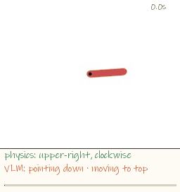

A working board for the framework and the models we build with it. Everything here is pinned up straight from the experiment logs, warts and all.
1
The goal
what we're actually building
Goal: Framework that outputs
Auto-didacticNeurosymbolicworld models
for arbitrary domains
Auto-didactic
Origin: autos (self), didaktos (taught)
Self-teaching: Learning without any teacher or formal schooling. Involves designing your own curriculum, and evaluating your overall learning of a task/subject. Here, we refer to: World models that improve themselves through some iterative process, without any oracle or an external feedback to their overall learning.
Self-teaching has a more specific meaning in the context of Statistical Learning Theory, and we do use this definition, because it turns out to make the broader goal tractable.
In particular, the teacher does not know about the generating model, and has the same burden as the learner of interpreting the situation.
The goal was to generate a symbolic substrate that allows for analysis using temporal logic (going one step beyond the simple If-Then rules of RIJEPA).
We use Kripke structures, which are state-transition graphs used in CTL model checking. Every state is a set of atomic propositions that hold; every edge is an observed transition, so rules like AG(p → AX q) can be checked directly.
How
Segment. Chop each video into event clips at moments of change. The design uses surprise over the latent vector; in the v0.4.0 Gym runs the cuts come from turning points in the recorded state, with surprise and latent speed logged as diagnostics.
Name. A VLM observes the video segments to notice what visible change occurs across the transition boundaries.
Declare. These visible changes are used to declare atomic propositions, which, once declared, label every clip as a truth vector vt.
Roll forward.The truth-dynamics model learns to predict vt+1; frames sharing the same active propositions become Kripke states, and AG / AG-AX rules are mined from the transitions.
How does it perform?
two Gymnasium testbeds
Forced pendulum Pendulum-v1 · random smooth torque in [−2, 2]
15 s episode: physics vs the 7B labeller

10 s episode: physics vs the 3B labeller
frames
224 px, 20 fps, actions = torque recorded per frame
state
angle θ and angular velocity ω, used only for scoring and run C
run A
200 × 10 s episodes (40 held out) · labels from Qwen2.5-VL-3B · 12 APs proposed
run B
30 × 15 s episodes (6 held out) · labels from Qwen2.5-VL-7B · 10 APs
run C
same 30 × 15 s episodes · labels computed from (θ, ω): 4 quadrants × 2 rotations
In the clips: physics (from θ, ω) what the VLM said about that clip
99%of true reversals show up as dips in latent speed (±3 frames, precision 0.62; run B/C latents)
+4.4 ptsnext-frame accuracy over copy-the-last-label on 40 held-out episodes (run A: 0.896 vs 0.852)
0.58transition accuracy with state labels (run C), vs 0.48–0.51 with VLM labels
8 vs 6Kripke states: the full swing cycle from state labels, vs six variants of "pointing up" from the 7B labeller
The latent slows down when the bob does
One 15 s training episode (run B/C). Red ticks mark true reversals, where ω changes sign. Latent speed ‖zt+1 − zt‖ dips at 13 of the 14. Surprise does not mark them: it runs slightly higher mid-swing, when the bob is fastest.
true reversal
see the numbers
signal
behaviour at reversals
latent speed minima
13 / 14 reversals within ±3 frames in this episode; 99.2% recall, 0.62 precision over all run B/C training videos
surprise
mean 0.41 within ±3 frames of a reversal vs 0.49 elsewhere; correlates with |ω| (r = 0.46)
Beats copying the last label, barely
Per-proposition next-frame accuracy on held-out episodes.
persistence (copy vt)truth-dynamics model
see the numbers
run
held-out
model
persistence
reference
A · VLM-3B, 10 s
40
0.896
0.852
VLM labels of held-out clips
B · VLM-7B, 15 s
6
0.968
0.957
VLM labels of held-out clips
C · state labels, 15 s
6
0.968
0.952
state ground truth (rollout 0.925)
Where it counts: frames where truth flips
Copying the last label scores 0 on these frames by construction.
transition accuracyframe-change F1
see the numbers
run
transition acc.
change F1
spurious flips
frames that flip
A · VLM-3B, 10 s
0.511
0.811
0.037
14.8%
B · VLM-7B, 15 s
0.482
0.696
0.010
4.3%
C · state labels, 15 s
0.576
0.654
0.012
4.8%
The Kripke structures it built
Same 15 s episodes, same pipeline, two labellers. Node size = frames spent in the state, edge weight = transition probability. Hover or tap a state to read its propositions.
Labels from (θ, ω): run C
8 states · 28 transitions (those under 5% not drawn). Outer ring ↺ anticlockwise, inner ring ↻ clockwise; spokes are reversals.
Tap a state.
Labels from Qwen2.5-VL-7B: run B
6 states · 10 transitions. Every state also asserts pointing up · swinging left.
Tap a state.
Mined temporal rules
All hold at confidence 1.0, but on only 1–6 supporting segments, and they inherit whatever the labeller got wrong.
AG(down → to_top)if pointing downwards, then moving towards the toprun A · support 4 · conf 1.0
AG(to_right → AX down)if moving towards the right, every next state is pointing downwardsrun A · support 1 · conf 1.0
AG(reversing → AX slowing)if reversing direction, every next state is slowing downrun B · support 4 · conf 1.0
AG(up → AX swing_left)if pointing up, every next state is swinging left; true only because every clip was labelled that wayrun B · support 6 · conf 1.0
Mountain car MountainCar-v0 · an under-powered car rocking its way up a hill
Results being pinned up
Same TOKW pipeline on the classic Gym hill climb: the car has to rock back and forth to build momentum, so the interesting events are the turnarounds on each slope. Figures go here in the same layout as the pendulum.
Known limitations
The labeller is the bottleneck
Labelling quality is a bottleneck, and hence the choice of the VLM makes or breaks the pipeline.
Asked a scene-agnostic question ("which quadrant of the frame is the main object in?") on 48 short clips cut at turning points, Qwen2.5-VL answered "upper-left" all 48 times. The bob was in the lower half in 44 of them.
The 7B labeller tagged every training clip "pointing up · swinging left", while the bob spends 80% of its frames in the lower half.
On the unforced pendulum (no torque), the VLM-labelled Kripke structure collapsed to a single state at both timescales.
With labels computed from (θ, ω) instead, the same pipeline recovers the 8-state swing cycle and the best transition accuracy (0.58), so the dynamics models are not what's holding it back.
Held-out scores for runs A and B are measured against the same VLM's labels of the held-out clips: they measure agreement with the labeller, not with physics.
3
Up next on the board
space reserved
Mountain car results
TOKW on MountainCar-v0, pinned into the card above.
Next model
Each new model gets its own card: diagram, what, how, figures, limitations.
Closing the loop
Self-taught theories tested against naturally shifting data.